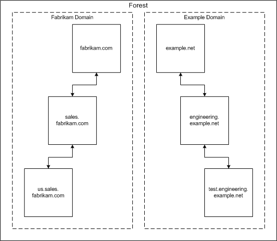

title: Forests description: A forest is a set of one or more domain trees that do not form a contiguous namespace. ms.assetid: b7beb305-0022-477a-85bf-779821202b26 ms.tgt_platform: multiple keywords:
A forest is a set of one or more domain trees that do not form a contiguous namespace. All trees in a forest share a common schema, configuration, and global catalog. All trees in a given forest exchange trust according to transitive hierarchical Kerberos trust relationships. Unlike trees, a forest does not require a distinct name. A forest exists as a set of cross-reference objects and Kerberos trust relationships recognized by the member trees. Trees in a forest form a hierarchy for the purposes of Kerberos trust; the tree name at the root of the trust tree refers to a given forest.
The following figure shows a forest of noncontiguous namespaces.

Â
Â